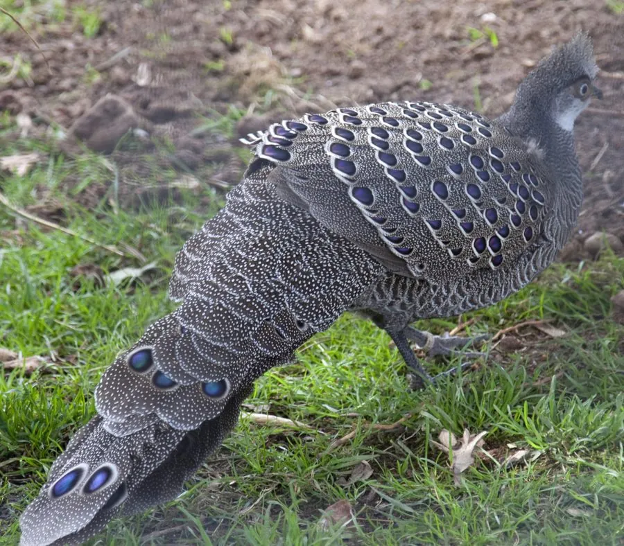

鸟类 · 动物界
灰孔雀雉 Polyplectron bicalcaratum

羽色灰褐、尾羽与翅上密布金属光泽眼状斑的雉类，求偶时展尾如孔雀开屏，栖于东南亚与云南南部的常绿林下层。
- 分类
- 门脊索动物门纲鸟纲目鸡形目科雉科属孔雀雉属
- 栖息环境
- 热带与亚热带常绿阔叶林下层，竹丛与密灌丛
- 地理分布
- 中国云南南部，以及缅甸、泰国、老挝、越南、印度东北部
- 保护级别
- IUCN 无危（LC）；中国国家一级保护动物；CITES 附录Ⅱ
物种志
灰孔雀雉体长约 56–76 厘米，体重 0.5–0.8 千克。通体以灰褐、棕灰为主，密布细小的黑褐与浅色点斑，头顶有短冠羽；最醒目的是翅与尾羽上排列的椭圆形眼状斑，斑心呈金属蓝绿或紫铜色，边缘镶黑，随光线角度变色。雌鸟体形略小，眼状斑不明显，羽色更暗淡。
它们分布于东南亚至中国云南南部，栖息于热带与亚热带常绿阔叶林的下层，偏爱竹丛与密灌丛，性隐蔽，多在林下地面单独或成对活动。食性以植物为主，取食种子、果实、嫩芽和落花，也吃昆虫、蜗牛与小型无脊椎动物。繁殖期雄鸟会在固定地点展尾求偶，尾巴竖起展开，露出成排眼斑，同时发出响亮的双音节叫声。每窝产 2–5 枚卵，雌鸟孵卵约 21 天。因森林砍伐和捕捉观赏，其种群在中国境内十分稀少。
形态与习性
- 体长约 56–76 cm，体重 0.5–0.8 kg
- 食性种子、果实、嫩芽、落花，兼食昆虫与蜗牛
- 繁殖每窝 2–5 枚卵，雌鸟孵卵约 21 天
- 眼状斑翅与尾羽具金属蓝绿至紫铜色眼斑，随角度变色
- 求偶雄鸟竖起展开尾羽，露出成排眼斑并发出双音节叫声
- 活动节律晨昏活动为主，性隐蔽，多在林下地面行走
- 种群现状中国境内记录稀少，主要分布于云南南部保护区
趣味知识
- 灰孔雀雉尾羽上的眼斑会随光线角度变换颜色，从蓝绿到紫铜。
- 雄鸟求偶时把尾羽竖成扇形，像一面嵌满宝石的屏风。
- 它极少飞行，受惊时更愿意快步钻进竹丛躲藏。